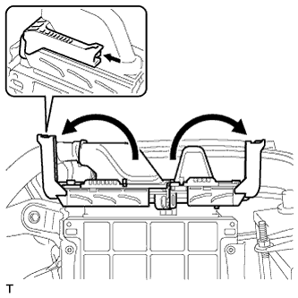
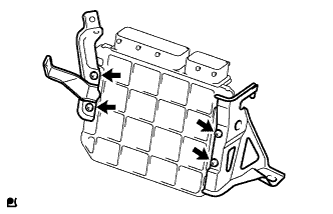

|
Remove the 2 nuts and engine cover assembly No.1.
Engine Control Computer (2AZ-FE) Removal |
| 1. Disconnect Battery Negative Terminal |
| 2. Remove Engine Cover Sub-assembly NO.1 |
|
Remove the 2 nuts and engine cover assembly No.1.
| 3. Remove Air Cleaner Cap w/ Air Cleaner Hose |
Disconnect the ventilation hose.
 |
Disconnect the vacuum switching valve connector and clamp, and disconnect the wire harness.
Disconnect the fuel vapor feed hose and fuel vapor feed hose No.2.
 |
Disconnect the intake air flow meter connector and clamp, and disconnect the wire harness from the air cleaner cap.
 |
Lock air cleaner hose clamp No.1.
With the clamp locked, remove the air cleaner cap w/ air cleaner hose.
| 4. Remove Air Cleaner Case |
Remove the air cleaner filter element.
 |
Remove the 3 bolts and clamp, and remove the air cleaner case.
| 5. Remove Engine Control Computer |
 |
While pushing the lock on the lever, lift the lever and disconnect the 2 engine control computer connectors.
 |
Remove the clamp and 2 bolts, and remove the engine control computer.
 |
Remove the 4 screws and remove the 2 engine control computer brackets.